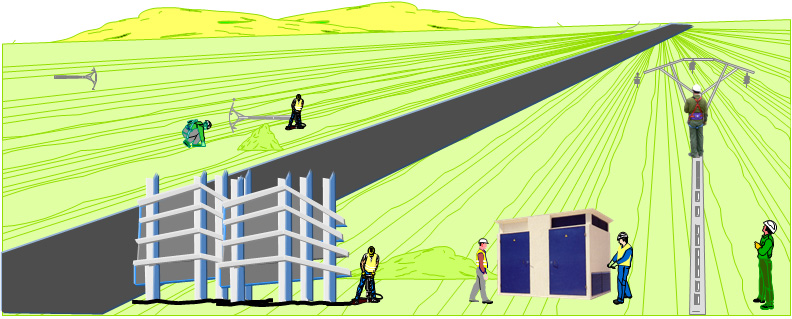

¿Cómo debe actuar, cuando concurran Recursos Preventivos, en el mismo tajo?
En el caso de que concurran en un mismo tajo varias empresas, realizando operaciones diversa, sucesivas o simultáneas, que REQUIERAN la presencia de Recursos Preventivos

Los Recursos Preventivos de las empresas implicadas deberán:
Darse a conocer y colaborar en las labores de Seguridad.